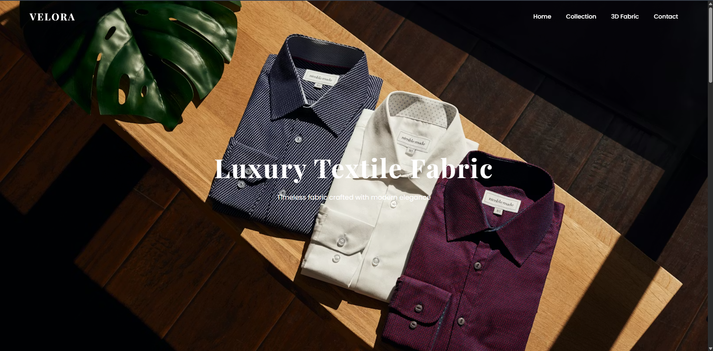
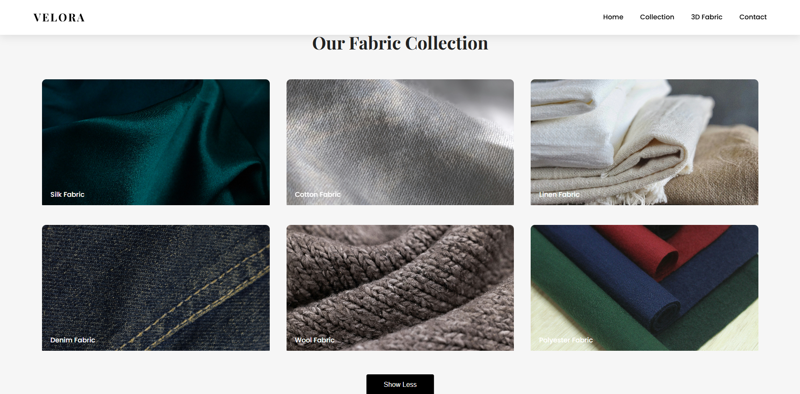
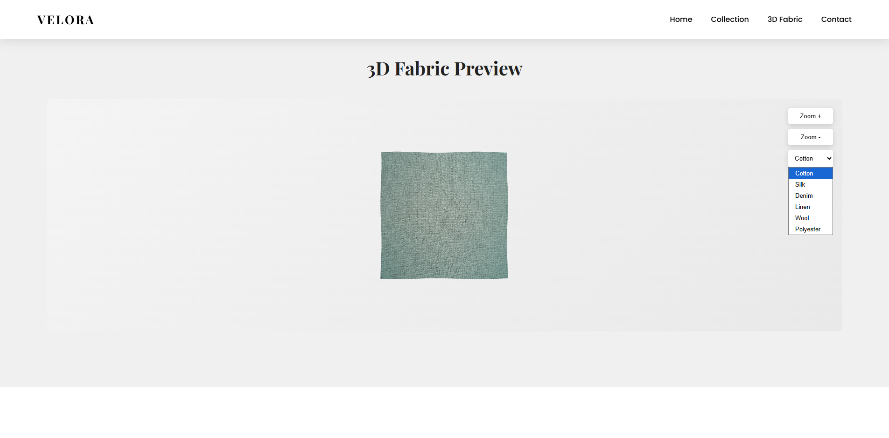
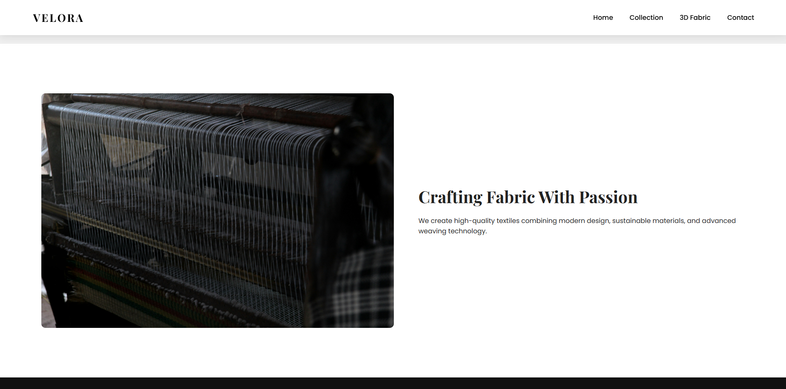
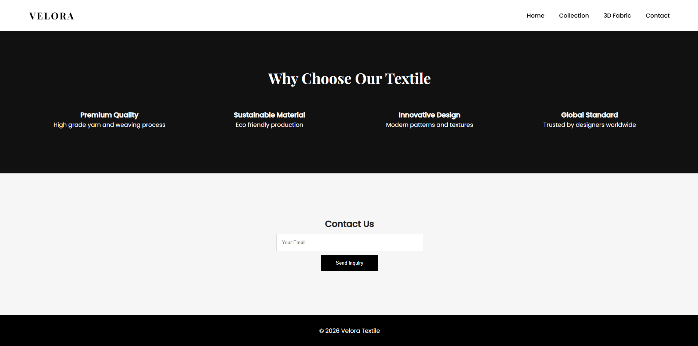

Velora adalah konsep website textile modern yang menampilkan koleksi kain premium dengan desain luxury dan fitur interaktif.
Overview of the Velora Fabric website interface across multiple pages.

Home Page

Our Collection

3D Fabric Preview

About / Crafting Fabric With Passion

Contact Page